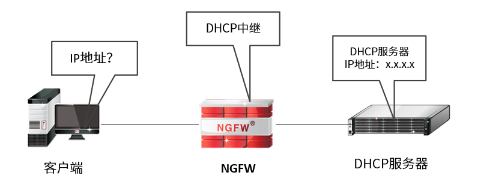
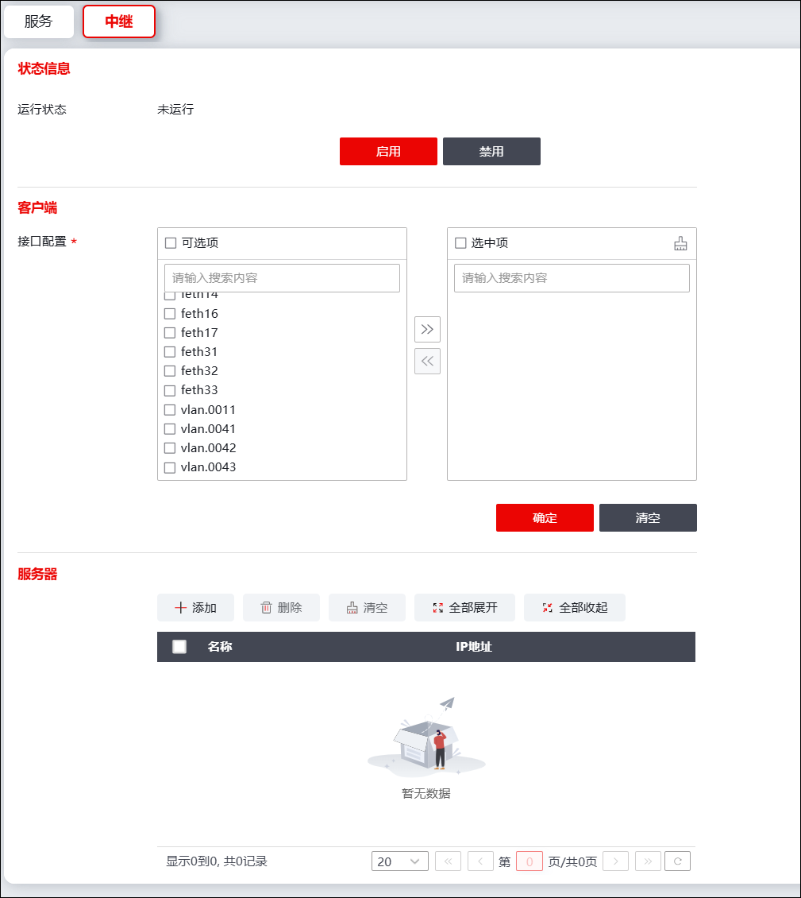

DHCP客户端向DHCP服务器获取IP地址、默认网关、DNS等网络配置参数的报文为广播报文，接收响应的报文同样为广播报文。这种将导致当DHCP客户端和DHCP服务器不在同一个子网内（广播域）时，DHCP客户端发送的DHCP请求报文在经过网关时会被丢弃，导致DHCP请求报文无法被处于其他网段的DHCP服务器接收。为解决此问题，DHCP客户端与DHCP服务器处于不同网段时，必须在DHCP客户端与其他子网的连接点部署DHCP中继。
DHCP中继可实现DHCP广播报文和DHCP单播报文的互转，帮助将客户机的DHCP请求广播报文转化为单播报文发送给指定DHCP服务器，并将DHCP服务器响应的单播报文转化为DHCP广播报文发送给DHCP客户端。实现DHCP客户机从其他网段的DHCP服务器获取IP地址及其他配置参数，如默认网关、DNS等等。
NGFW作为DHCP中继代理时，可帮助客户机从其他网段的DHCP服务器获取IP地址以及其他网络配置参数。其部署于网络中的拓扑结构如下图所示。

配置步骤如下：
| 步骤1 | 选择 系统，激活“中继”页签，如下图所示。 |

| 步骤2 | 客户端接口配置 |
在“接口配置”处选择与DHCP客户端相连的NGFW接口。
| 步骤3 | 服务器地址 |
点击【添加】按钮，选择与DHCP Server相连的NGFW接口，输入DHCP服务器的IP地址。
| 步骤4 | 启动DHCP中继服务。点击【启用】按钮，启动DHCP中继服务。 |
|
²防火墙启用DHCP中继功能时，只支持为一个DHCP服务器转发DHCP请求包和响应包。 ²如果DHCP服务器的默认网关不是NGFW的接口（虚接口）地址，必须在该服务器上添加一条静态路由，目的地址为DHCP服务器作用域的网段，网关地址为NGFW与DHCP服务器连接的接口地址，否则客户机无法正确获取IP。 |